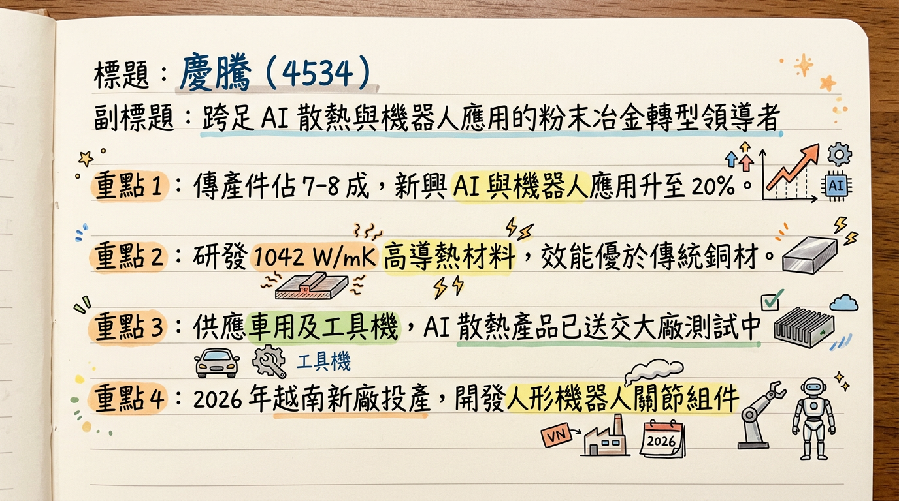
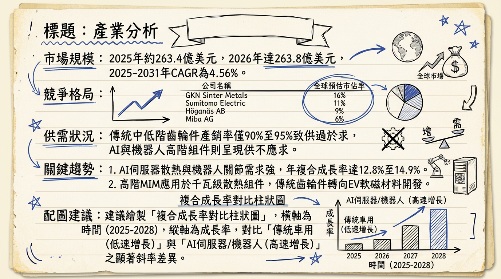
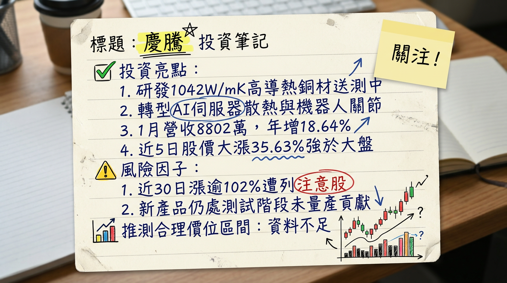

慶騰正從傳統粉末冶金廠轉型為 「AI 散熱材料 + 機器人核心組件」 供應商，憑藉優於純銅 2.6 倍的導熱技術切入 AI 供應鏈，2026 年將迎來越南與美國新產能投產的轉型關鍵元年。
慶騰精密（4534）為台灣粉末冶金（PM）領軍企業，核心技術涵蓋粉末冶金、金屬射出成型（MIM）及粉末鍛造。目前公司正處於結構性轉型期，產線由低毛利手工具轉向高單價科技應用。
| 業務類別 | 主要產品 | 營收佔比 | 發展重心 |
|---|---|---|---|
| 傳統應用 | 電動工具齒輪箱、汽車引擎及變速箱零組件 | 70% - 80% | 產能移往越南，優化成本 |
| 新興高階應用 | AI 伺服器散熱、機器人關節、醫療器材 | 20% - 30% | 研發重點，2026 預期佔比提升 |
| 月份 | 營收金額 (萬元) | 月增率 (MoM) | 年增率 (YoY) | 備註 |
|---|---|---|---|---|
| 2026/01 | 8,802 | -11.19% | +18.64% | 轉型產品開始小量貢獻 |
| 2025/12 | 9,910 | +59.32% | +21.53% | 營運趨勢顯著轉強 |
| 2025/11 | 6,220 | -3.66% | -15.79% | 產業調整末期 |
| 2025/10 | 6,457 | -6.13% | -7.56% | 庫存去化中 |
| 2025/09 | 6,878 | +1.75% | -1.29% | 表現持平 |
| 2025/08 | 6,760 | -17.30% | +7.81% | 傳統淡季影響 |
目前主流大型券商對 4534 追蹤較少，多為獨立研究機構觀點：
| 券商/機構名 | 目標價 | 評等 | 日期 | 核心邏輯 |
|---|---|---|---|---|
| 元富證券 | N/A | 未評等 | 2025/12 | 強調 AI 複合材料轉型潛力 |
| 市場綜合預估 | 32.0 - 35.0 | 偏多 | 2026/02 | 預期 2026 轉盈，EPS 挑戰 0.5-0.8 元 |
| 季度 | 毛利率 (%) | 營業利益率 (%) | 稅後淨利率 (%) | 每股盈餘 (EPS) |
|---|---|---|---|---|
| 2025 Q3 | 14.90% | -4.18% | 0.09% | 0.01 元 |
| 2025 Q2 | 10.63% | -9.99% | -18.21% | -0.38 元 |
| 2025 Q1 | 11.84% | -8.28% | -7.14% | -0.16 元 |
| 2024 Q4 | 16.01% | -5.41% | 5.23% | 0.10 元 |
| 2024 Q3 | 18.40% | -3.30% | -3.37% | -0.08 元 |
| 2024 Q2 | 18.04% | 2.79% | 3.92% | 0.10 元 |
| 2024 Q1 | 16.32% | -0.46% | 3.69% | 0.08 元 |
| 2023 Q4 | 11.93% | -7.54% | -12.56% | -0.27 元 |
| 排名 | 公司名稱 | 全球市佔率 | 核心動態 |
|---|---|---|---|
| 1 | GKN Powder Metallurgy | 15% - 18% | 強攻 EV 驅動電機組件 |
| 2 | Sumitomo (住友電工) | 10% - 12% | 擴大銅-石墨複合材料產能 |
| 3 | Höganäs AB | 8% - 10% | 主導綠色鋼粉技術 |
| 4 | 慶騰 (4534) | < 1% | 技術領先 (1042 W/mK) 但規模較小 |
| 公司名稱 | 2025 預估毛利率 | 特色 |
|---|---|---|
| 慶騰 (4534) | 15% - 18% | AI 散熱、機器人、醫療多重題材 |
| 保來得 (Porite) | 18% - 22% | 台灣 PM 龍頭，專注車用 |
| 精確 (1530) | 12% - 15% | 專注 EV 電池盒壓鑄 |
2. 2026/01 營收 YoY +18.64% 轉強。
3. 銅複合材料若通過 AI 伺服器平台認證將有爆發性接單。
2. 本業營益率尚未轉正，本業獲利仍有斷層。
本報告由 AI 自動產生，資料來源為公開網路資訊，僅供參考，不構成投資建議。產生時間：2026-03-02 10:24


